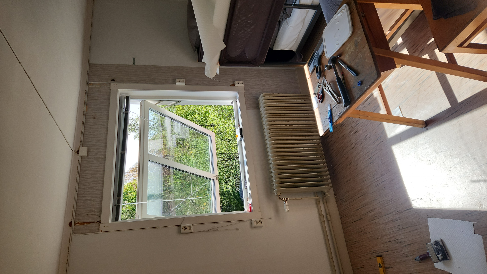
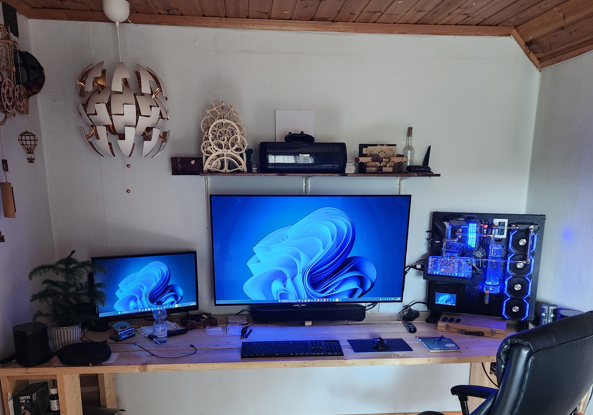
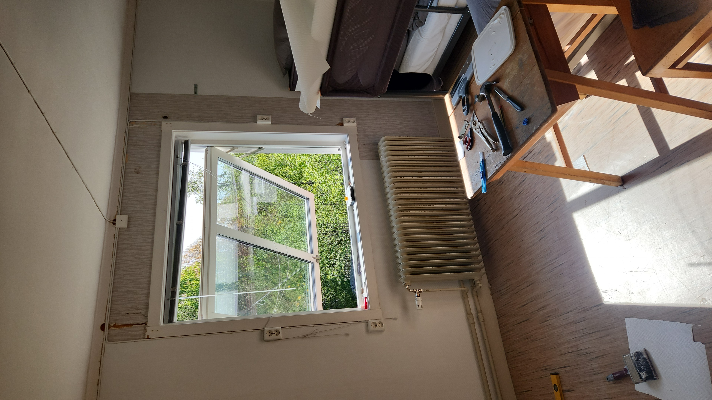
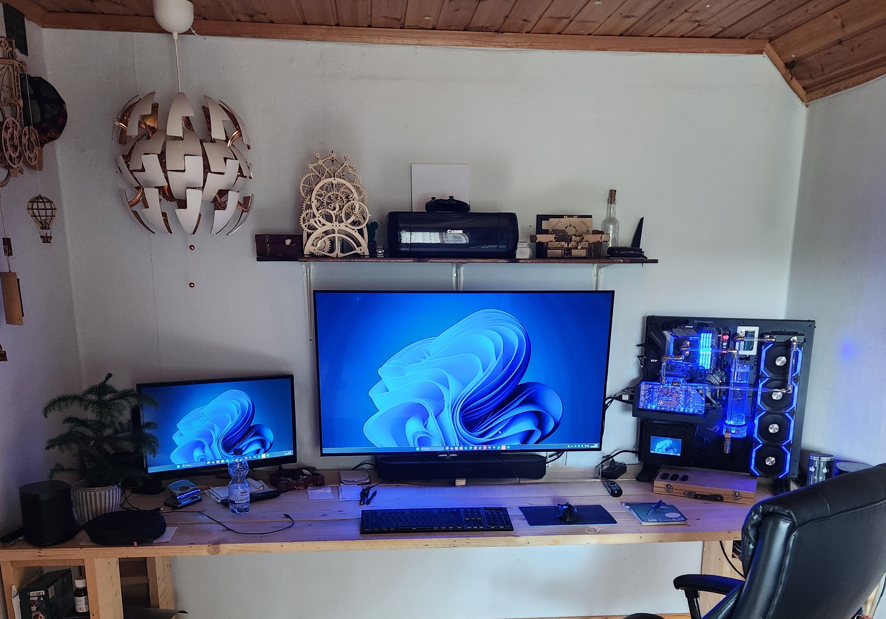

Versatile help with facility work, renovations, installations & PCs


Originally from Amsterdam, the Netherlands, I’ve spent many years working in construction, technical services, and IT. Over the years, I’ve earned a wide range of diplomas and certifications, and worked on numerous projects – including for several (semi) government organizations. This mix of experience has given me a solid understanding of both practical craftsmanship and modern technology.
Now based in beautiful Värmland, Sweden, I combine all those skills to help people with whatever needs fixing, installing, or improving. Whether it’s a small home repair, a tricky technical issue, or a larger renovation project – I handle every task with care, precision, and a no-nonsense attitude.
On the tech side, I’m also passionate about building and repairing custom PCs – from quiet and efficient workstations to high-performance gaming rigs with advanced liquid cooling. I make sure every build runs smoothly and looks great.
I’m a hands-on problem solver who enjoys finding smart and practical solutions, both in homes and for businesses. You can count on professional results, honest communication, and fair rates starting at 450 SEK/hour.
Want to know more about me? Check out my socials below, or just send me a message through the contact form – I’ll get back to you soon.
Looking forward to hearing from you!
Based in beautiful Värmland, but always on the move across Sweden to help people get things done. Whether it’s hanging a lamp, fixing a leaky tap, assembling furniture, or handling small repairs around the house – I’m your go-to guy for all those everyday jobs that make your home feel complete.
I also take on larger home projects such as renovations, installations, and troubleshooting – always with care, precision, and a no-nonsense attitude.
And for the tech enthusiasts out there: I design, build, and repair custom PCs, including high-performance gaming rigs with liquid cooling. Every build is tailored to your needs for top-notch performance and a clean, professional look.
You’ll get honest advice, fair prices, and reliable service that’s always on point. So whether you’ve got a quick fix or a big idea in mind – let’s make it happen!


 


